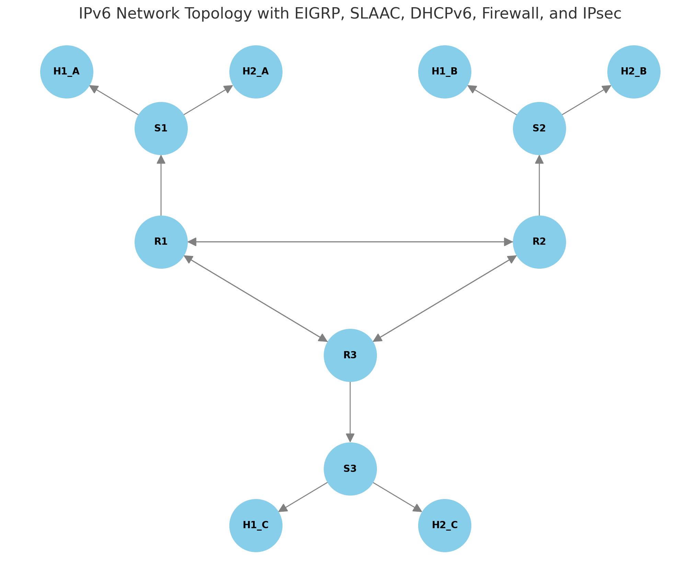

Networkx
NetworkX是一个Python库，用于创建、操作和研究复杂网络的结构、动态和功能。它提供了一种灵活和高效的方式来处理图形（graph），特别是在数据科学、社交网络分析、生物网络分析等领域中。以下是对NetworkX库的详细介绍：
1. 安装
首先，你可以通过以下命令安装NetworkX：
pip install networkx
2. 基本概念
- Graph（图）: NetworkX支持无向图、有向图、多重图等。
- Node（节点）: 图的基本单元，可以包含任意的Python对象。
- Edge（边）: 节点之间的连接，可以包含属性数据。
3. 创建图
你可以创建不同类型的图，例如无向图、有向图等。
import networkx as nx
# 创建一个空的无向图
G = nx.Graph()
# 创建一个空的有向图
DG = nx.DiGraph()
4. 添加节点和边
可以通过多种方式添加节点和边。
# 添加单个节点
G.add_node(1)
# 添加多个节点
G.add_nodes_from([2, 3, 4])
# 添加单条边
G.add_edge(1, 2)
# 添加多条边
G.add_edges_from([(2, 3), (3, 4)])
5. 节点和边的属性
可以为节点和边添加属性。
# 为节点添加属性
G.nodes[1]['label'] = 'A'
# 为边添加属性
G[1][2]['weight'] = 4.2
6. 图的基本操作
可以查询节点和边的数量、邻居等信息。
# 获取节点数量
print(G.number_of_nodes())
# 获取边数量
print(G.number_of_edges())
# 获取节点的邻居
print(list(G.neighbors(1)))
7. 图的绘制
可以使用Matplotlib绘制图形。
import matplotlib.pyplot as plt
nx.draw(G, with_labels=True)
plt.show()
8. 图的算法
NetworkX提供了丰富的图算法，包括路径、中心性、团体检测等。
# 最短路径
shortest_path = nx.shortest_path(G, source=1, target=4)
# 计算节点的度中心性
degree_centrality = nx.degree_centrality(G)
# 检测图中的连通分量
connected_components = list(nx.connected_components(G))
9. 读取和写入图
可以将图读写为多种格式。
# 将图写入GML文件
nx.write_gml(G, 'graph.gml')
# 从GML文件读取图
G = nx.read_gml('graph.gml')
10. 应用示例
NetworkX在许多实际问题中都有应用，例如社交网络分析、生物信息学、复杂网络等。例如： - 社交网络分析: 研究社交网络中的节点（用户）和边（关系）的结构和动态。
- 社交网络分析:
-
节点和边的中心性: 计算网络中哪些节点或边更为重要。 ```python import networkx as nx
# 创建一个示例社交网络图 G = nx.Graph() G.add_edges_from([(1, 2), (1, 3), (2, 3), (3, 4), (4, 5)])
# 计算度中心性 degree_centrality = nx.degree_centrality(G) print("Degree Centrality:", degree_centrality)
# 计算接近中心性 closeness_centrality = nx.closeness_centrality(G) print("Closeness Centrality:", closeness_centrality)
# 计算中介中心性 betweenness_centrality = nx.betweenness_centrality(G) print("Betweenness Centrality:", betweenness_centrality) ```
-
生物信息学:
-
基因网络: 分析基因之间的相互作用，寻找关键基因或基因模块。 ```python import networkx as nx
# 创建一个示例基因网络图 G = nx.Graph() G.add_edges_from([('GeneA', 'GeneB'), ('GeneA', 'GeneC'), ('GeneB', 'GeneC'), ('GeneC', 'GeneD')])
# 检测连通分量 connected_components = list(nx.connected_components(G)) print("Connected Components:", connected_components)
# 检测图中的社团结构 communities = list(nx.community.label_propagation_communities(G)) print("Communities:", communities) ```
-
复杂网络:
-
网络鲁棒性分析: 研究网络在节点或边被删除时的行为，评估网络的鲁棒性。 ```python import networkx as nx
# 创建一个示例复杂网络图 G = nx.erdos_renyi_graph(10, 0.3)
# 删除一个节点后的图 G.remove_node(0) # 计算删除节点后的连通分量 new_components = list(nx.connected_components(G)) print("New Connected Components after removing node 0:", new_components) ```
NetworkX的优势
- 灵活性: 支持多种图类型（无向图、有向图、多重图等）以及丰富的属性和自定义功能。
- 丰富的算法: 提供了大量内置的图算法，方便进行复杂网络分析。
- 易于使用: 具有简洁明了的API，易于学习和使用。
- 可视化能力: 可以方便地与Matplotlib结合，进行图的可视化。
进阶使用
- 大规模图处理:
-
对于非常大的图，NetworkX可能不够高效。这时可以考虑使用其他库，如Graph-tool或基于分布式计算的图处理框架（如Apache Spark GraphX）。
-
集成其他工具:
- 可以与Pandas结合使用，进行数据分析和处理。
- 与SciPy结合使用，进行高级的数学和统计分析。 ```python import pandas as pd import networkx as nx
# 从Pandas DataFrame创建图 df = pd.DataFrame({'from': [1, 2, 3], 'to': [2, 3, 4]}) G = nx.from_pandas_edgelist(df, 'from', 'to')
print("Graph from DataFrame:", G.edges) ```
- 图数据库集成:
- 可以与图数据库（如Neo4j）结合使用，进行更复杂的图数据存储和查询。 ```python from py2neo import Graph
# 连接到Neo4j数据库 graph_db = Graph("bolt://localhost:7687", auth=("neo4j", "password"))
# 从Neo4j读取图数据 query = "MATCH (n)-[r]->(m) RETURN n.name, m.name" data = graph_db.run(query).data()
# 创建NetworkX图 G = nx.Graph() for edge in data: G.add_edge(edge['n.name'], edge['m.name'])
print("Graph from Neo4j:", G.edges) ```
总结
NetworkX是一个功能强大的图处理和分析工具，广泛应用于多个领域。通过NetworkX，你可以方便地创建、操作和分析图数据，利用其丰富的算法库解决各种复杂网络问题。此外，通过与其他Python库的集成，可以进一步扩展其功能，实现更多高级应用。
import matplotlib.pyplot as plt
import networkx as nx
# 创建一个空的有向图
G = nx.DiGraph()
# 添加节点和边
# 路由器和交换机
routers = ["R1", "R2", "R3"]
switches = ["S1", "S2", "S3"]
hosts_A = ["H1_A", "H2_A"]
hosts_B = ["H1_B", "H2_B"]
hosts_C = ["H1_C", "H2_C"]
# 添加路由器、交换机、主机之间的连接
G.add_edges_from([
("R1", "S1"), ("R2", "S2"), ("R3", "S3"),
("S1", "H1_A"), ("S1", "H2_A"),
("S2", "H1_B"), ("S2", "H2_B"),
("S3", "H1_C"), ("S3", "H2_C"),
])
# 添加路由器之间的连接（形成三角形拓扑）
G.add_edges_from([
("R1", "R2"), ("R2", "R1"),
("R1", "R3"), ("R3", "R1"),
("R2", "R3"), ("R3", "R2"),
])
# 设置节点的位置
pos = {
"R1": (0, 1), "R2": (2, 1), "R3": (1, 0),
"S1": (0, 2), "S2": (2, 2), "S3": (1, -1),
"H1_A": (-0.5, 2.5), "H2_A": (0.5, 2.5),
"H1_B": (1.5, 2.5), "H2_B": (2.5, 2.5),
"H1_C": (0.5, -1.5), "H2_C": (1.5, -1.5),
}
# 绘制网络拓扑图
plt.figure(figsize=(10, 8))
nx.draw(G, pos, with_labels=True, node_size=3000, node_color="skyblue", font_size=10, font_weight="bold", arrowsize=20, edge_color="gray")
plt.title("IPv6 Network Topology with EIGRP, SLAAC, DHCPv6, Firewall, and IPsec")
plt.show()
这是根据你所描述的实验环境生成的IPv6网络拓扑图。图中展示了三个子网（A、B、C），每个子网包括一个路由器、一个交换机和两个终端设备。路由器之间形成一个三角形拓扑，以便于测试EIGRP for IPv6的路由更新和故障恢复功能。  - R1, R2, R3：路由器 - S1, S2, S3：交换机 - H1_A, H2_A, H1_B, H2_B, H1_C, H2_C：终端设备
路由器之间的连接形成了核心网络部分，每个子网内的终端设备通过交换机连接到对应的路由器。
在这个拓扑基础上，你可以配置EIGRP for IPv6、SLAAC、DHCPv6、防火墙和IPsec等功能，并进行实验分析。希望这个拓扑图能够帮助你更好地理解和实现实验目标。